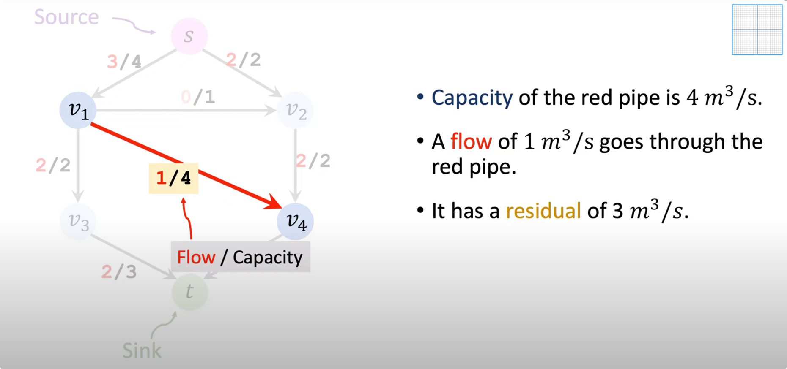

在一个网络中，求从起点、source到目标点，经过的最大的流量，每条边的权重等于该管道的最大流量，求整个路径的最大流量。
残差 = 容量 - 真实流量 
最简单的方法，但是未必能找到最大流

通过多次迭代，先找可达路径，计算残差图，移走空闲量=0的边，进入第二次循环。
最小割要解决的问题和最大流是一样的
输入：方向有权图 目标：割的容量最小 输出：某个S-T cut，
最大流最小割定理（Max-Flow Min-Cut Theorem）
在一个网络流量中，从s到t的最大流量等于，最小s-t cut的容量。
--L. R. Ford and D. R. Fulkerson. Flows in Networks. Princeton University Press, (1962 .)